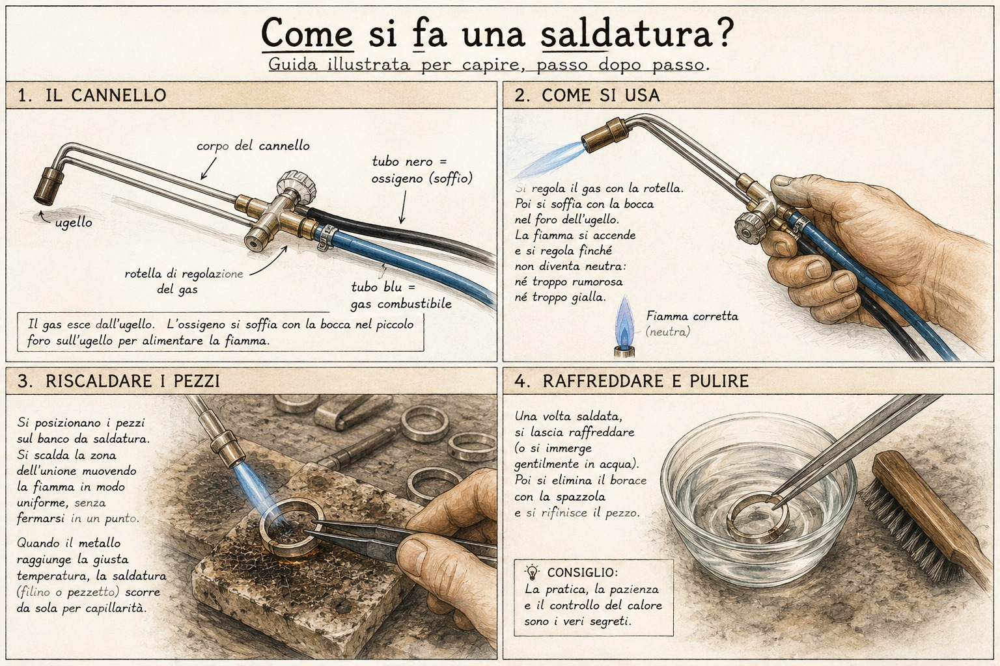

Come si fa una saldatura?
Guida illustrata per capire, passo dopo passo, uno dei gesti più antichi dell'oreficeria.

Esistono molti modi per saldare i metalli e ogni artigiano sviluppa nel tempo le proprie preferenze, i propri strumenti e il proprio modo di lavorare.
In bottega utilizziamo spesso uno strumento tradizionale chiamato chalumeau. Si tratta di un piccolo cannello da orafo che permette di controllare il calore con grande precisione.
La parte affascinante è che il controllo della fiamma è quasi immediato. Dopo anni di esperienza il movimento diventa naturale, quasi istintivo.
Contrariamente a quanto si potrebbe immaginare, durante una saldatura non si punta sempre la fiamma direttamente sul punto da unire. Nella maggior parte dei casi si scalda l'intero pezzo in modo controllato e uniforme, lasciando che il calore raggiunga la giunzione.
Quando la temperatura è corretta, la saldatura fonde e scorre nel punto desiderato per capillarità.
Il risultato finale dipende da molti fattori: temperatura, pulizia delle superfici, scelta della lega saldante e soprattutto esperienza dell'artigiano.
È uno di quei lavori che sembrano semplici quando vengono eseguiti bene, ma che richiedono anni di pratica per essere padroneggiati davvero.
Nota di Bottega
Esistono molti tipi di cannello e quasi ogni orafo ha il proprio preferito.
Cambiano forma, regolazioni e dettagli costruttivi, ma il principio rimane lo stesso: controllare il calore con precisione.
Anche la fiamma illustrata è soltanto un esempio. Ogni lavorazione può richiedere una regolazione diversa.